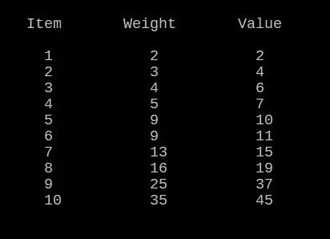

This problem is taken from interactivepython.org site and it is about Dynamic Programming.
Follow the link for full description:
interactivepython.org/runestone/static/pythonds/Recursion/pythondsProgrammingExercises.html
Find below a screenshot of the text:
Our task is to find the optimal combination of items that maximizes the total profit, under the constraint of the maximum bearable weight. The problem asks to be solved with a bearable weight of 20. Honestly a dynamic programming code is not necessary under this specific constraint.
- We have only five items
- It's easy to find the item with the highest value/weight ratio (item 3), and 20 modulo 4 is zero, so it is obvious that to maximize the profit we must take the item 3 for 5 times (20/4). And we will obtain a total profit of 40.
For two reasons:
But what happens instead if we have 10 items and our weight constraint is for example 38 as you can see below ?

The problem in this scenario is much harder to solve and we need to elaborate a more complicated algorithm: a Dynamic Programming Algorithm.
In order to do this we have to write two different functions:
The first function will find the maximum profit obtainable.
The second function will print the selection of items inside our knapsack that give the maximum profit.
The first part is below:

As you can notice the function createTab draws the dictionary object written in line 1 in a clear table (as shown above).
The function buttonUpDynamic is the function created to calculate the maximum profit obtainable.
When you develop a dynamic programming algorithm you can choose a top-down method or a bottom-up method.
We have chosen a bottom-up method. You can delve into the matter in chapter 15 of the book:
"Introduction to Algorithms" by Cormen, Leiserson, Rivest, Stein.
The list created in line 18 will be necessary to build the next function of our code.
The output of this first part is:
In line 32 we decided to print only the maximum profit of our weight constraint (38). But if you delete that line, the code will print the maximum obtainable profit for each bearable weight until 38.
So now we know that 56 is the maximum profit we can obtain from our selection under the weight constraint of 38.
We still don't know how our selection is composed, therefore we must build the second fundamental function of our code:
And the final output of our Dynamic Programming Algorithm is:
P.S.: this is not an easy code. In order to understand all the steps I suggest to manually transcribe lines 20-25 and lines 39-51 by using paper and pen in order to keep track of how the code works.
You can find the entire script here: Github